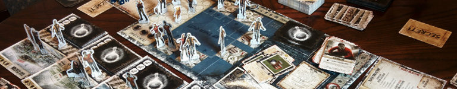
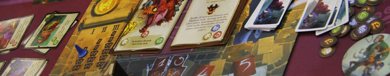
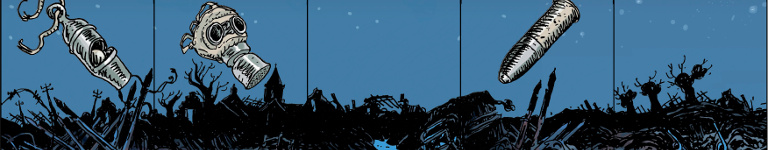
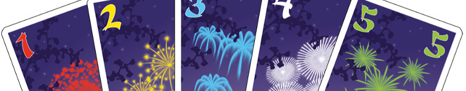

Nonostante ci siano alcuni giochi che raccontano vere e proprie storie, gran parte si concentrano sul creare un'atmosfera e lasciano la narrativa all'immaginazione dei giocatori stessi. In questo articolo vi offriamo delle raccomandazioni (a tema fantasy o fantascientifico) per chi, dopo una serata a giocare in compagnia, vuole leggere un bel libro per ricaricare le pile e vedere i temi toccati dai giochi sviluppati in maniera diversa.

Ispirato dall'ondata di materiale a tema zombie che ha colpito tutte le forme di intrattenimento negli ultimi anni, Dead of Winter fa gestire ad ogni giocatore un gruppo di sopravvissuti durante la più classica delle apocalissi zombie. Tutti i sopravvissuti vivono insieme in una colonia, devono collaborare per assicurarne la sopravvivenza e, se possibile, completare una missione definita dallo scenario. La possibile (ma non garantita) presenza di un traditore che desidera il fallimento della colonia causa da un lato una sensazione di paranoia, ma spinge anche i giocatori, traditori e non, a mostrarsi collaborativi per non attirare i sospetti dei compagni.
Stazione undici di Emily St. John Mandel esplora, non solo la sfiducia ed il dubbio, ma anche lo stimolo alla collaborazione e alla ricostruzione che emerge naturalmente durante quelle partite di Dead of Winter in cui un giocatore si trova in difficoltà. La trama principale del romanzo racconta la storia di una troupe teatrale errante venti anni dopo una epidemia di scala globale, e fa da ottimo contrasto alla violenza ed al nichilismo della maggioranza della narrativa del genere post-apocalittico.

Dopo un anno da matricole nell'Elementary College i giocatori aprono un libro maledetto e si ritrovano a combattere demoni e maledizioni in modo da richiuderlo senza impazzire. Il Grande Libro della Follia è un gioco basato su meccaniche di deck-building in cui è possibile utilizzare le carte per neutralizzare maledizioni, imparare ed utilizzare magie o migliorare il proprio mazzo. Nel corso di una partita i giocatori passeranno da matricole con deboli magie standard, a maghi con un grimorio di tutto rispetto, ma molta follia dentro di sé.
Ci sono molti romanzi ormai che raccontano della crescita di giovani maghi (il gioco richiama Harry Potter anche nei ritratti dei maghi protagonisti), ma quello che per stile più si allontana dal grande libro della follia è Il mago di Earthsea di Ursula K. Le Guin. In questo classico della letteratura fantasy il protagonista, Ged, scatena un demone ombra senza nome durante i suoi studi, ma il modo in cui lo combatterà sarà radicalmente diverso, non imparando potenti magie ma crescendo come persona nel corso di anni e diventando un mago completo e senza le follie dei protagonisti del gioco.

La storia che racconta Ta-pum è quella di un gruppo di amici sul fronte durante la prima guerra mondiale (il nome originale, Les Poilus, si riferisce ai soldati francesi durante la Grande Guerra) e dei loro sforzi per sopravvivere ed arrivare alla fine delle guerra. I giocatori dovranno superare missioni, spendendo morale ed accumulando traumi. Solo dandosi supporto tra loro i giocatori potranno superare i traumi accumulati e riuscire ad arrivare alla fine della guerra.
Il romanzo fantastico che meglio descrive la guerra dal punto di vista dei soldati è Guerra Eterna scritto da Joe Haldeman, veterano della guerra in Vietnam, in risposta al più famoso Fanteria dello Spazio (Starship Troopers). Come in Ta-pum, l'avversario non è veramente il nemico, che non compare spesso, ma i traumi causati dalla vita sul fronte: a causa della dilatazione spazio-temporale, per ogni anno che i soldati passeranno in servizio, interi secoli passeranno sulla Terra, rendendo i soldati effettivamente senza patria. Come in Ta-pum, per chi arriverà alla fine, ci sarà un lieto fine molto meritato.

La meccanica centrale di Hanabi è sorprendente: le carte sono tenute al contrario ed è quindi possibile vedere le carte degli altri giocatori, ma non le proprie. Unito a severe restrizioni sulla comunicazione, il gioco diventa velocemente un esercizio non solo in ragionamento logico ma anche in fiducia nelle informazioni e nelle azioni future dei propri compagni. Più si gioca Hanabi, e più un gruppo costruisce strategie per riuscire a superare ogni imprevisto.
In Gli inganni di Locke Lamora di Scott Lynch un gruppo di truffatori pianifica imbrogli contro la nobiltà di Camorr, ricca città in un mondo fantastico molto ben realizzato. Locke ed i suoi compagni sono in grado di superare i numerosi contrattempi sfruttando solo le loro poche risorse ed una serie di contingenze preparate per quando qualcosa andrà (invariabilmente) storto. Esattamente come in Hanabi, più complicato è il piano, più risulterà costoso un errore.
Nel grande successo di Matt Leacock i giocatori devono combattere quattro malattie, rallentandone la diffusione e ricercando delle cure prima che il mondo cada nel panico. Il puzzle centrale del gioco è trovare il modo di coordinare le azioni e le caratteristiche dei personaggi in modo da minimizzare il rischio: è impossibile evitare che pericolosi focolai appaiano nel mondo, quindi i giocatori dovranno continuamente decidere su quali regioni concentrarsi. Queste scelte risultano ancora più difficili nella versione Legacy del gioco, dove danni ricevuti da città e continenti rimangono da partita a partita.
World War Z di Max Brooks racconta, tramite una serie di interviste ai sopravvissuti, momenti salienti prima, durante e dopo una pandemia globale zombie durata interi decenni. La prospettiva salta da un punto all'altro del globo, mostrando gli sforzi contro la diffusione della malattia nei vari continenti. In uno dei momenti più critici del romanzo la situazione è così terribile e senza speranza che i leader mondiali sono costretti ad abbandonare intere aree dei loro paesi alla pandemia, pur di arrestarne la diffusione, meccanica che risulterà parÉticolarmente familiare ai giocatori di Pandemic Legacy...